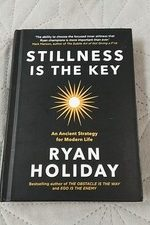

Library › Self-Improvement
Stillness Is the Key — Summary & Key Lessons

Ancient strategy for modern chaos — the stillness that lets you think clearly, act decisively, and actually enjoy the life you're building.
📖 OPEN THE FULL INTERACTIVE BREAKDOWN →🌐 Read it in Hindi, Hinglish, Gujarati, Tamil & 22 more languages — free, with audio.
💡 The Big Idea
Completing Holiday's Stoic trilogy, this book locates the trait shared by every tradition — Stoics called it apatheia, Buddhists upekkha, Christians grace: STILLNESS, the ability to be steady, clear, and present while the world spins. It's not passivity — it's the operating state behind every great decision (Kennedy out-stilling the Cuban Missile Crisis while his generals demanded bombs) and every great performance. Holiday builds it in three domains. MIND: become present (anxiety lives in past and future only), LIMIT INPUTS (information obesity is the modern disease — Napoleon read his mail weeks late so 'urgent' could die of natural causes), journal to empty the head, and cultivate solitude for the slow thoughts. SPIRIT: conquer desire (ENOUGH is the forbidden word — the Joseph Heller story), heal the inner child driving your compulsions, beat envy (comparison is the thief of stillness), and anchor in virtue — because a corrupt center makes calm impossible. BODY: stillness is embodied — protect SLEEP like a fortress, take the WALK (Nietzsche: 'only thoughts reached by walking have value'), build routines that automate the trivial, pursue hobbies with no ROI, and learn to say the strategic NO. The keystone habit beneath all: you don't need more; you need less, held more deeply.
🧠 The 6 Key Lessons
Lesson 1: Limit the Inputs: Information Obesity Is a Choice
Part 1: Mind — Limit Your Inputs
The mind can be still or stuffed — not both. Holiday's diagnosis: we've confused being INFORMED with being FED — mainlining news cycles, feeds, notifications, and other people's emergencies until thinking becomes impossible; garbage in, garbage lodged. The masters were input snobs: Napoleon instructed secretaries to hold all letters three weeks — when he finally read them, most 'urgent' matters had resolved themselves, and the genuinely important had announced itself through other channels; he starved noise to feed signal. The modern translation: batch your inputs (news once daily, email in windows), unfollow ruthlessly (every follow is a standing invitation to interrupt your thoughts), and protect the FIRST and LAST hours of the day from other people's agendas — the morning mind is your clearest instrument and doomscrolling hands it to strangers. Journaling is the complementary output valve: pages each morning to dump the churn (Marcus Aurelius, Anne Frank, and half of history's clear thinkers kept theirs) — not literature, drainage. The test of a healthy information diet isn't how much you know; it's whether you can sit alone for thirty minutes without reaching for anything.
📖 Example: Kennedy in the thirteen days of the Cuban Missile Crisis — Holiday's centerpiece: advisors flooding him with intelligence, generals unanimous for immediate strikes, the fate of civilization compressing into hours. Kennedy's response was engineered stillness:… Read the full example →
⚡ Do this: Install a one-week input diet: news at ONE fixed time daily, phone out of reach for the first and last hour, unfollow 50 accounts, and three mornings of one-page brain-dump journaling. Log what you notice by day 7 — especially how few 'urgent' things missed you.
Lesson 2: Enough: The Word That Ends the Hamster Wheel
Part 2: Spirit — Beware Desire
The spirit-killer isn't failure — it's insatiable MORE. Holiday's touchstone: at a billionaire's party, Kurt Vonnegut tells Joseph Heller their host made more money yesterday than Catch-22 earned in decades; Heller: 'Yes, but I have something he will never have — ENOUGH.' Without an internal definition of enough, every achievement instantly re-baselines (hedonic adaptation) and you become the highest-paid hamster in the wheel — Holiday's gallery of warning: Howard Hughes, unlimited money and total inner chaos, engineering his own destruction in penthouse prisons. The related thieves: ENVY (comparison converts even victories into deficits — someone will always have more, and social media is envy's home delivery service) and the wounded INNER CHILD (much relentless ambition is an old wound demanding proof — the father who said you'd never amount to anything is the ghost-CEO of many empires; heal the wound or it sets your KPIs forever). The practice: define enough in NUMBERS (income, house, milestone) before the race resumes; anything after that number is bonus, not oxygen — and notice how much strategy improves when survival panic exits the room.
📖 Example: Tiger Woods, Holiday's extended case study (pre-comeback): the greatest golfer alive, programmed by his father into a winning machine with a hollow center — the compulsions that detonated his family and career weren't appetite, they were anesthesia;… Read the full example →
⚡ Do this: Write your Enough Card: the specific income, net worth, and lifestyle at which you formally have enough — and two 'bonus rules' for everything beyond it (what % gets given, what gets bought without guilt). Review it before your next big yes.
Lesson 3: The Body Keeps the Score: Sleep, Walks, and Routine
Part 3: Body — Build a Life
Stillness isn't achieved in the head — it's built with the body. Three non-negotiables. SLEEP: the ultimate performance drug and the first thing strivers sacrifice — Holiday's counter-examples run from Churchill's disciplined naps to the research on sleep-deprived judges handing out harsher sentences; an exhausted mind cannot be still, only stunned. THE WALK: Nietzsche wrote that only thoughts reached by walking have value; Kierkegaard walked Copenhagen daily 'into well-being'; Darwin's sandwalk thinking-path produced evolution's details — walking occupies the fidgety surface mind so the deep mind can finally speak (rule: no phone, no podcast; the boredom IS the mechanism). ROUTINE: far from imprisoning creativity, routine automates the trivial so no willpower leaks on decisions that don't matter — Fred Rogers' identical daily structure (swim, weight check, same sweater ritual) wasn't quirk, it was the container that made thirty years of radical on-camera presence possible. Add unproductive HOBBIES (fishing, pottery, guitar — sanctuaries where nothing is optimized) and the strategic NO (every yes is a lease on your future stillness): the body-schedule is the spirit's architecture.
📖 Example: Winston Churchill, Holiday's surprising exhibit: the man who held civilization's line was a fanatic of restoration — daily naps in pajamas (non-negotiable, even during the Blitz), painting landscapes and BRICKLAYING at Chartwell (he laid walls for hours — a… Read the full example →
⚡ Do this: This month, install the trinity: a fixed sleep window (7+ hours, phone charging outside the bedroom), a daily 20-minute phone-less walk, and one scheduled weekly hobby hour with zero productive value. Defend all three like meetings with your future clarity.
Lesson 4: Stillness Under Fire: The Space Between Stimulus and Response
Throughout: The Application
The point of the practice is the MOMENT — when the market crashes, the diagnosis lands, the insult flies, the deal wobbles: stillness is the trained pause between stimulus and response where judgment lives. The composite protocol from Holiday's exemplars: SLOW THE CLOCK (almost nothing is as urgent as adrenaline claims — Kennedy stretched a 48-hour ultimatum into 13 days of thinking room); CREATE SPACE (physically leave — the walk, the swim, the night's sleep before the decision; 'I'll respond tomorrow' is a complete sentence); EMPTY FIRST (journal or speak the emotion out BEFORE deciding, because a full cup takes no new information); CONSULT THE QUIET (after the noise-collection, the still small voice — intuition trained by virtue — usually knew at the start); and ACCEPT what the moment actually is, not what fear projects (Stoic amor fati as tactical tool: fighting reality burns the energy needed to answer it). This is why the domains stack: the person who limited inputs, defined enough, slept, and walked ARRIVES at the crisis with reserves — stillness under fire isn't summoned in the moment; it's withdrawn from an account funded daily.
📖 Example: Rogers vs the U.S. Senate, 1969: Fred Rogers — cardigan, soft voice — facing a hostile subcommittee chairman set to slash public TV funding, armed with senators' impatience and six minutes. He didn't debate, rush, or perform: he spoke slowly, held silences… Read the full example →
⚡ Do this: Choose your crisis protocol NOW, in writing, for the next high-stakes moment: (1) name the emotion on paper, (2) 20-minute walk before any reply, (3) sleep on anything irreversible, (4) then ask 'what does the still version of me already know?' Keep the card where pressure will find you.
Lesson 5: The Journal: The Arena Where You Meet Yourself
Part 2: The Mind
Holiday's most consistent practice across every chapter: journaling — the deliberate, daily excavation of your own thoughts. The journal is where Marcus Aurelius worked out his philosophy, where leaders from Churchill to Teddy Roosevelt processed their days, and where you can hear your own mind above the noise. The rules are few: write by hand if possible (slower = deeper), write without editing (the mess is the point), and be honest (the journal that flatters you is a waste of paper). The journal converts the vague anxiety in your head into visible, addressable words — and the person who meets themselves on the page is far harder to fool or frighten.
📖 Example: Holiday describes how Marcus Aurelius's Meditations — never intended for publication — was his private training ground for ruling an empire: the daily practice of questioning his reactions, rehearsing his values, and auditing his character. The most powerful… Read the full example →
⚡ Do this: Start a 10-minute evening journal tonight: one thing that went well, one thing you'd handle differently, one thing you're grateful for. Repeat daily for two weeks.
Lesson 6: Stillness Is the Key to Love: Presence Is the Gift
Part 4: The Relationships
Holiday's least expected chapter: the deepest benefit of stillness is not productivity or peace — it is the ability to truly be with other people. The person who is always half-elsewhere (checking the phone, planning the next move) can never give or receive real connection; the still person's full presence is the rarest gift in a distracted world. The practices are simple: put the phone away, listen without composing your reply, let silences exist. Love, Holiday argues, is not a feeling you have but a presence you offer — and presence is trained, not wished. The still person doesn't just hear you; they make you feel heard, which is what every relationship is starving for.
📖 Example: Holiday shares how the busiest leaders he's studied made their families feel like the center of the universe in the moments they were together — not because they had time, but because they gave the time they had with complete presence, undistracted by the… Read the full example →
⚡ Do this: Tonight, give one person 20 minutes of phone-free, fully-present attention. Notice the difference in the conversation — and in them.
✅ 5-Step Action Plan
- Batch inputs and protect the first/last hour — your attention needs a plan or it becomes everyone else's.
- Journal one page each morning: drainage, not literature.
- Write your Enough Card with real numbers; bonus rules for everything beyond.
- Guard the trinity: fixed sleep, daily phone-less walk, weekly useless hobby.
- Pre-commit a crisis protocol: name it, walk it, sleep on it, then decide.
⚠️ When This Doesn't Work
Holiday's stillness is the antidote to modern noise — and Boris Becker is its counter-example: the youngest Wimbledon champion ever, who had every stillness practice available — fame, money, freedom — and still ran his life into chaos, debt and prison because the noise was inside him. Stillness is not the absence of drama; it's the presence of discipline. The book can make stillness feel like a retreat; for people whose chaos is internal, it's a construction project, and the book underweights the scaffolding required.
💀 The Graveyard Proves It
🎾 Boris Becker — From Wimbledon to Prison. Burn: $50M+ and his freedom. Read the full case study →
💬 Best Quotes from Stillness Is the Key
- “You were given one body and one mind — and you are letting the world use them as a dumping ground.”
- “There is no stillness for the person who cannot say no.”
- “If you don't have a plan for your attention, everyone else does.”
Interactive version: mark lessons as read, listen in your language, share quote cards.